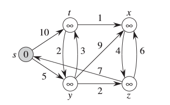

Elimizde alttaki gibi bir ağ yapısı var; bu yapı belli noktalar arasındaki yolları, ya da elektrik devrelerindeki bağlantıları, ya da şehirler arası nehirleri temsil ediyor olabilir. Ağ yapısında yolların ne kadar uzak, ya da “pahalı’’ olduğu da verilmiş, ve bizim merak ettiğimiz bir noktadan diğerine diğerine en kısa şekilde nasıl gidileceği.

Üstteki resimdeki örnekte başlangıç noktası s’den bitiş noktası x’e diyelim en kısa yol hangisi? Acaba s-y-z-x gidişi mi? Bu yolun toplamı 5+2+6=13 ediyor. Daha kısa yol var mıdır?
Dijkstra (telafuz Daykstra) algoritması bu sorunun cevabını veriyor [1, sf. 659]. Algoritmanın işleyiş şekli şöyledir; elde bir öncelik kuyruğu vardır, bakılacak olan yollar önce oraya konulur. Her noktanın, düğümün sayısal ağırlığı onun başlangıca olan uzaklığıdır. Dikkat: onun bağlı olduğu komşu düğümler değil, başlangıca olan uzaklığı. Algoritma işleyişi sırasında bu ağırlığı değiştirebilir, eğer bir düğüme başlangıçtan daha kısa bir yol bulunursa bu ağırlıkta değişim yapılacaktır, bu işleme gevşetme (relaxing) ismi veriliyor.
Neyse; müstakbel düğümler kuyruğa konur. İlk başta kuyrukta sadece başlangıç noktası s olacaktır, o kuyruktan çekilir, komşuları geri konur. Komşuların ağırlığı tabii ki s ile komşular arasındaki mesafedir. Öncelik kuyruğu ağırlık değerine göre otomatik olarak sıralama yaptığı için bir düğüm çekildiğine en kısa yollu olan gelir. Kuyruktan çekilen her düğümün ağırlığı artık o düğüme olan en kısa yol olarak kabul edilir (niye - sebebine birazdan geleceğiz). Algoritma aynı şekilde devam eder, çekilen düğümün komşuları alınıp kuyruğa konur, böyle gider.
Bazen aynı düğüme farklı yollardan erişmek mümkündür, bu durumda farklı yolan erişilen düğümün ağırlığı daha “gevşetilebilir’’, mesela 10 iken 8 haline getirilebilir (örnekte t düğümünde bu oluyor), tabii ki bu durumda düğümün kuyruktaki yeri de değişebilecekir, belki bir başka düğümün önüne geçer.
from pqdict import pqdict
def dijkstra(G,basla,bitis):
# nihai uzakliklarin sozlugu
D = {}
# ebeveyn dugumlerin sozlugu
P = {}
# dugumlerin baslangica olan tahmini uzakliginin kuyrugu
Q = pqdict()
Q[basla] = 0
while len(Q)>0:
(v,vv) = Q.popitem()
D[v] = vv
for w in G[v]:
vwLength = D[v] + G[v][w]
if w in D:
if vwLength < D[w]:
raise ValueError("sonuca giden daha iyi yol bulundu")
elif w not in Q or vwLength < Q[w]:
Q[w] = vwLength
P[w] = v
path = []
while 1:
path.append(bitis)
if bitis == basla: break
bitis = P[bitis]
path.reverse()
return path
G = {'s':{'t':10, 'y':5}, 't':{'x':1, 'z':2}, 'x':{'z':4}, \
'y':{'t':3, 'x':9, 'z':2}, 'z':{'s':7, 'x':6}}
path = dijkstra(G, 's', 'x')
print (path)['s', 'y', 't', 'x']Kod en kısa yolu buldu. Bu algoritmanın hesaplama karmaşıklığı \(m\) kenar \(n\) düğüm içeren bir çizit için \(O((m+n) \log n)\)’dir. Bu karmaşıklık hiç fena değil.
Şekillerde görülen düğümler siyah renkli olunca kuyruktan çekilmiş demektir, ve onlara olan en kısa yol hesaplanmıştır.
Peki Dijkstra algoritmasının doğruluğundan nasıl emin olacağız? Dijkstra’nın işleyişi sırasında sürekli iki tane kümeyi idare ettiğini söyleyebiliriz. Bir küme öncelik kuyruğu içindeki müstakbel, diğeri ise ona olan başlangıç uzaklığının artık bilindiği bitmiş düğümlerdir. İddia şu ki öncelik kuyruğundan (en tepedeki, en yakın, ağırlığı en az) çektiğimiz her düğüm ikinci kümeye transfer edilebilir, yani ona olan uzaklıktan eminiz. Neden? Şimdi o düğüme gidebilecek daha kısa bir yol olduğunu farz edelim. Fakat elimizdeki düğüme erişilirken diğer komşular değil ona gelindi, çünkü ona gelen yol daha kısaydı, bu demektir ki komşular üzerinden tur atarak elimizeki düğüme erişmek demek tanım itibariyle yolu uzatmak demektir. Bu durumda kuyruktan çekilen düğümün ağırlığının ona giden en kısa yol olduğuna güvenebiliriz. İspat tamamlandı.
Alttaki alternatif kod [2]’yi temel alıyor.
from heapq import heappush, heappop
inf = float('inf')
def relax(W, u, v, D, P):
d = D.get(u,inf) + W[u][v] # Muhtemel kisayol tahmini
if d < D.get(v,inf): # Bu hakikaten bir kisa yol mu?
D[v], P[v] = d, u # Tahmini ve ebeveyni guncelle
return True # Degisim oldu
def dijkstra2(G, s, e):
D, P, Q, S = {s:0}, {}, [(0,s)], set() # Tahmin, agac, kuyruk, ziyaret?
while Q: # Hala islenmemis dugum?
_, u = heappop(Q) # En dusuk tahminli dugum
if u in S: continue # Coktan ziyaret edildi? Atla
S.add(u) # Simdi ziyaret ettik
for v in G[u]: # Tum komsularina bak
relax(G, u, v, D, P) # Disari cikan baglantiyi gevset
heappush(Q, (D[v], v)) # Tahminiyle beraber kuyruga ekle
path = []
while 1:
path.append(e)
if e == s: break
e = P[e]
path.reverse()
return path
path = dijkstra2(G, 's','x')
print path['s', 'y', 't', 'x']Not: Aslında Dijkstra’nın ana hesabı bir düğüme olan başlangıçtan olan uzaklıktır. Fakat çoğunlukla net bir “kısa yol’’, x,t,z,vs.. şeklinde gerektiğinden algoritma işleyişi sırasında her düğüme giden bir önceki düğüme geriye doğru bir işaret konur, bu ebeveyn düğümü eldeki düğüme nereden gelindiğini hatırlamamızı sağlar. Sonra algoritma bitince bu yolu geriye doğru takip ederek en kısa yolu buluruz.
Not: Eğer elimizdeki çizit yapısı öyle ki iki düğüm arasında iki yönlü gidiş te mümkün ise algoritma değişir mi? Bu durumda algoritmaya dokunmadan çizit ağ yapısında ufak bir değişiklik yeterli; a,b arasında bağlantı varsa aynı şekilde bir b,a bağlantısı da ekleriz.
Java kodu Dijkstra.java dosyasında bulunabilir.
Kaynaklar
[1] Stein, Introduction to Algorithms
[2] Heatland, Python Algorithms